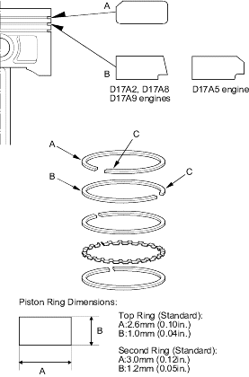
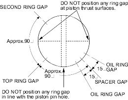
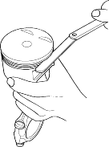

- Install the top ring (A) and second ring (B) as shown. The manufacturing marks (C) must be facing upward.

- Rotate the rings in their grooves to make sure they do not bind.
- Position the ring end gaps as shown:

- After installing a new set of rings, measure the ring-to-groove clearances:
Top Ring Clearance
D17A5 engine:
Standard (New):0.035 - 0.055 mm
(0.0014 - 0.0022 in.)
Service Limit:0.13 mm (0.005 in.)
D17A2, D17A8, D17A9 engines:
Standard (New):0.035 - 0.060 mm
(0.0014 - 0.0024 in.)
Service Limit:0.13 mm (0.005 in.)
Second Ring Clearance
Standard (New):0.030 - 0.055 mm
(0.0012 - 0.0022 in.)
Service Limit:0.13 mm (0.005 in.)
